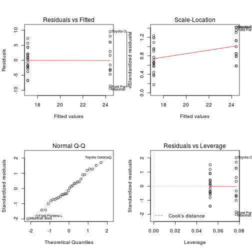

fit1 <- lm(mpg~am, data=mtcars)
summary(fit1)
##
## Call:
## lm(formula = mpg ~ am, data = mtcars)
##
## Residuals:
## Min 1Q Median 3Q Max
## -9.392 -3.092 -0.297 3.244 9.508
##
## Coefficients:
## Estimate Std. Error t value Pr(>|t|)
## (Intercept) 17.15 1.12 15.25 1.1e-15 ***
## am 7.24 1.76 4.11 0.00029 ***
## ---
## Signif. codes: 0 '***' 0.001 '**' 0.01 '*' 0.05 '.' 0.1 ' ' 1
##
## Residual standard error: 4.9 on 30 degrees of freedom
## Multiple R-squared: 0.36, Adjusted R-squared: 0.338
## F-statistic: 16.9 on 1 and 30 DF, p-value: 0.000285
Model
Let's fit a model with all explanatory variables. R-squared = 0.869
fitAll<-lm(mpg~.,mtcars)
summary(fitAll)
##
## Call:
## lm(formula = mpg ~ ., data = mtcars)
##
## Residuals:
## Min 1Q Median 3Q Max
## -3.45 -1.60 -0.12 1.22 4.63
##
## Coefficients:
## Estimate Std. Error t value Pr(>|t|)
## (Intercept) 12.3034 18.7179 0.66 0.518
## cyl -0.1114 1.0450 -0.11 0.916
## disp 0.0133 0.0179 0.75 0.463
## hp -0.0215 0.0218 -0.99 0.335
## drat 0.7871 1.6354 0.48 0.635
## wt -3.7153 1.8944 -1.96 0.063 .
## qsec 0.8210 0.7308 1.12 0.274
## vs 0.3178 2.1045 0.15 0.881
## am 2.5202 2.0567 1.23 0.234
## gear 0.6554 1.4933 0.44 0.665
## carb -0.1994 0.8288 -0.24 0.812
## ---
## Signif. codes: 0 '***' 0.001 '**' 0.01 '*' 0.05 '.' 0.1 ' ' 1
##
## Residual standard error: 2.65 on 21 degrees of freedom
## Multiple R-squared: 0.869, Adjusted R-squared: 0.807
## F-statistic: 13.9 on 10 and 21 DF, p-value: 3.79e-07
Appendix
Figure 1
m<-transform(mtcars, am=factor(am))
levels(m$am)[1] <- "Automatic"
levels(m$am)[2] <- "Manual"
plot(m$am , m$mpg, main="MPG vs Transmission", xlab="Transmission", ylab="MPG", )
abline(lm(mpg ~ am, m), col="red")
Figure 2
layout(matrix(c(1,2,3,4),2,2))
plot(fit1)
